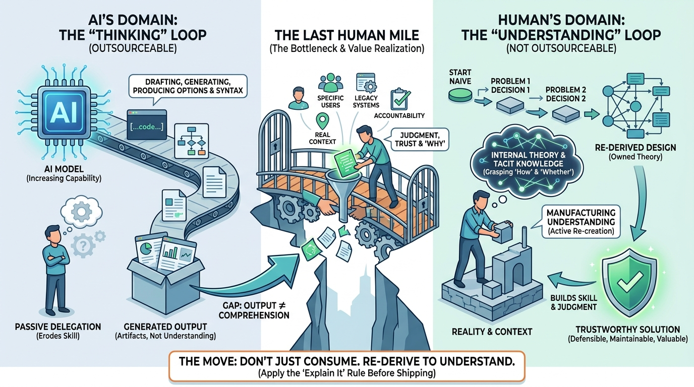

AI Software Development
You Can Outsource Thinking. You Cannot Outsource Understanding.

Image generated by Google Gemini (gemini-3-pro-image-preview)
AI Software Development

Image generated by Google Gemini (gemini-3-pro-image-preview)